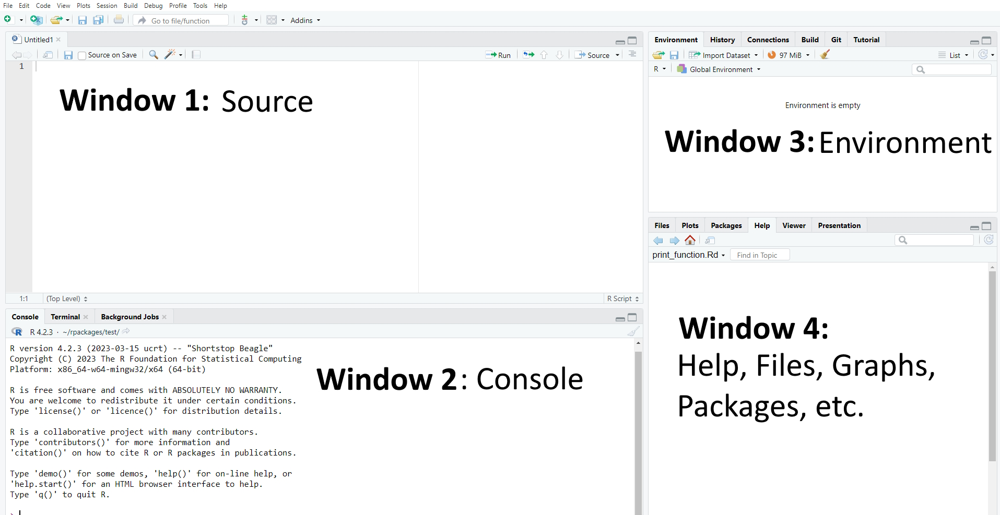
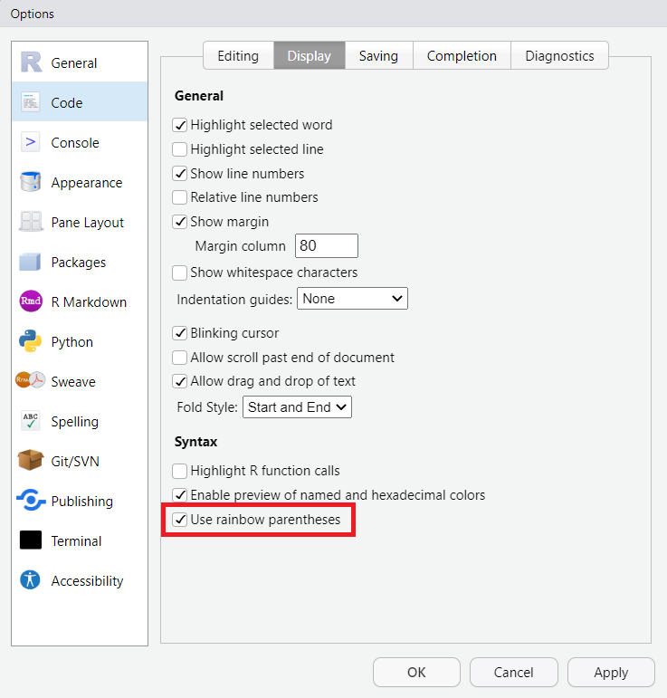
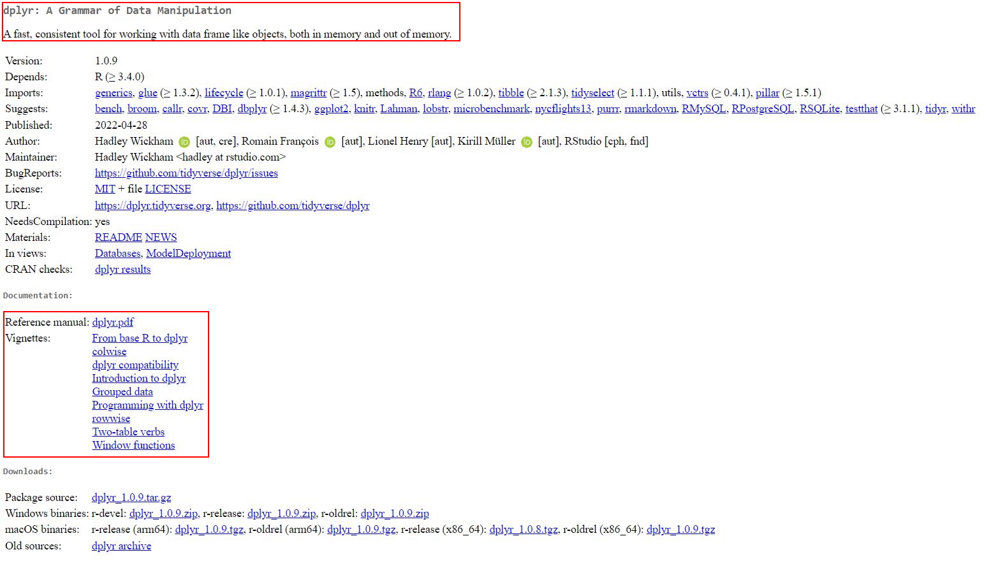

2 Tutorial: Installing & Understanding R/R Studio
After working through Tutorial 1, you’ll…
- know how to install R and RStudio
- know how to update R and RStudio
- understand the layout of RStudio
2.1 What is R?
R is the programming language we’ll use to import, edit, and analyze data. It’s original form is called Base R. A more recent and streamlined syntax for R is called the tidyverse. Base R and the tidyverse are both popular approaches to data manipulation and analysis in R, but they differ in their philosophies and syntax.
Base R is the set of core functions that come with the R programming language without any additional installations. These functions allow you to perform a wide range of data manipulation and analysis tasks, including reading and writing data, transforming and summarizing data, and creating visualizations. Base R is designed to be efficient and flexible, and it provides a lot of low-level functionality for working with data.
The tidyverse, on the other hand, is a collection of R packages (thus called a “meta-package”) developed by Hadley Wickham and his team at RStudio. The tidyverse is very readable code: You can usually read the code out loud and understand what it is doing. Moreover, the tidyverse is built around a set of principles and syntax that emphasize the importance of tidy data, i.e. data that is organized into rows and columns, where each column represents a variable and each row represents an observation. As you can see: tidy data looks just like your typical SPSS data window!
Our approach to teaching our BA students is to use the tidycomm package developed by Julian Unkel. It uses the tidyverse style of coding, but incorporates many convenience functions for communication researchers, such as calculating ICR tests (e.g., Krippendorff’s alpha or Fretwurst’s lotus). Julian, Mario Haim, and I are currently enhancing the package to greatly simplify data analysis for our students as compared to using SPSS. For example, with each significance test tidycomm will automatically provide students suitable graphical visualizations. To convince yourself of the ease of working with tidycomm, please refer to the following section: Using R is easy!
A hint for best practice: Usually, R users decide to use either Base R or the tidyverse at some point. When writing code, it’s a good practice to stick two one of the two approaches, Base R or tidyverse, and not mix them up because that makes the code less readable (just like writing in German dialect, Bavarian and East Frisian are both German, but a Bavarian will struggle more when reading a text that is partly written in East Frisian).
The approach of this tutorial is to use the first lesson to teach you a little bit of Base R – just enough that you are able to identify code as being written in Base. This way, you can distinguish helpful answers in online forums that are written in “your dialect” (i.e. tidyverse R) from those that are not written in your dialect (i.e., Base R). After that first lesson, we will stick to the tidyverse approach because it is so much more similar to SPSS and much more readable and easy-to-learn for beginners.
| R and (meta-)packages covered in this course: |
 |
2.2 Using R is easy!
R programming can be made easy with the usage of tidyverse and tidycomm. Allow me to demonstrate this by importing the well-known Worlds of Journalism data into R, filtering out all non-German journalists, describing the data using descriptive statistics, and analyzing it with an ANOVA.
| Loading data into R using the menu via File > Import Dataset > [your data type, e.g. SPSS: |
 |
| Choose your data in your folders and hit “Import” |
 |
Let’s activate the tidyverse and tidycomm packages (we will come back to this later in the Packages section):
And now, let us filter our data to include only German journalists in the dataset.
Looks great! Now let’s describe our data. Let’s get some descriptives for the variable “reach”, i.e., whether the journalists are working for regional or national outlets.
## # A tibble: 1 × 6
## Variable N Missing Unique Mode Mode_N
## * <chr> <int> <int> <dbl> <chr> <int>
## 1 reach 173 0 3 Regional 80Repeat this for the variable “autonomy_selection,” which refers to the level of autonomy that journalists feel they have in their daily work life.
## # A tibble: 1 × 15
## Variable N Missing M SD Min Q25 Mdn Q75 Max Range
## * <chr> <int> <int> <dbl> <dbl> <dbl> <dbl> <dbl> <dbl> <dbl> <dbl>
## 1 autonomy_select… 172 1 3.97 0.881 1 3 4 5 5 4
## # ℹ 4 more variables: CI_95_LL <dbl>, CI_95_UL <dbl>, Skewness <dbl>,
## # Kurtosis <dbl>It’s time to run an ANOVA with the two variables! IV = reach, DV = autonomy_selection.
## # A tibble: 1 × 15
## Variable F df_num df_denom p eta_squared M_Local SD_Local M_Regional
## * <chr> <num> <dbl> <dbl> <num> <num:.3!> <dbl> <dbl> <dbl>
## 1 autonomy_… 9.450 2 169 0.000 0.101 4.28 0.743 4.04
## # ℹ 6 more variables: SD_Regional <dbl>, M_National <dbl>, SD_National <dbl>,
## # post_hoc <list>, Levene_p <dbl>, var_equal <chr>That was pretty easy, wasn’t it?
2.3 Installing R
When you are ready to install R, use Cran to install the newest version of Ra nd its GUI (graphical user interface) (version 4.2.3, realeased 2023-03-15, called “Shortstop Beagle”). You’ll have to specify your operation system to download the right version:
- Installer for Windows
- Installer for macOS 10.13 (High Sierra) and higher
- Installer for macOS 11 (Big Sur) and higher
Mac Users: Please read the documentation of the installers on this site. You might need to install other dependencies to make R work.
2.4 Installing R Studio
Next, install R Studio. R Studio is a desktop application with a graphical interface that facilitates programming with R. The newest version of R Studio can be downloaded via this Link.
2.5 Updating R and R Studio
If you have already installed R and RStudio, please update your current version to the latest version. This way, we’ll all know that our versions are compatible.
2.5.1 On Windows
Updating on Windows is tricky. Therefore, you can use a package called
installr, which helps you manage your update. First, install the
installr package in the R GUI (not RStudio!). Use the following code
by copy-pasting it into the RStudio console and running it:
# installing/loading the package:
if (!require(installr)) {
install.packages("installr")
require(installr)
} # load / install+load installrAfter you have run the above code, let’s start the updating process of
your R installation by using the updateR() function. It will check for
newer versions, and if one is available, will guide you through the
decisions you’d need to make. You need to to copy the below code to your
console and run it:
Finally, update R Studio. Updating RStudio is easy, just open RStudio
and go to Help > Check for Updates to install a newer version.
2.5.2 On MAC
Go to CRAN and install the newer package installer.
After that update R Studio. Updating RStudio is easy, just open RStudio
and go to Help > Check for Updates to install a newer version.
2.6 How does R work?
R is an object- and function-oriented programming language. Chambers (2014, p. 4) explains “object- and function-oriented” like this:
- Everything that exists is an object.
- Everything that happens is a function call.
In R, you will assign values (for instance, single numbers/letters, several numbers/letters, or whole data files) to objects in R to work with them. For example, this command will assign the letters “hello” to an object called word by using the assign operator <- (a function used to assign values to objects):
The type of each object will dictate what sorts of computations you may perform with this object. The object word, for example, is distinguished by the fact that it is made up of characters (i.e., it is a word) - which may make it impossible to compute the object’s mean value, for example (which is possible only for objects consisting of numerical data).
2.7 Why should I use R?
There are several reasons why I’m an advocate of R (or similar programming languages such as Python) over programs such as SPSS.
R is free. Other than most other (statistical) programs, you do not need to buy it (or rely on an university license, that is likely to run out once you leave your department).
R is an open source program. Other than most other programs, the source code - i.e., the basis of the program - is freely available. So are the hundred of packages (we’ll get to those later – these are basically additional functions you may need for more specific analyses) on CRAN that you can use to extend R’s base functions.
R offers you flexibility. You can work with almost any type of data and rely on a large (!) set of functions to import, edit, or analyze such data. You can perform “complex” statistical modeling like SEM, panel analysis, multilevel analysis, and computational methods in R. And if the function you need to do so hasn’t been implemented (or simply does not exist yet), you can write it yourself! R supports package development!
Learning R increases your chances of on the job market. For many jobs (e.g., market research, data science, data journalism), applicants are required to know at least one programming language.
You can even write your homework in R (using
RMarkdown). This allows for the complete reproducibility of your analysis and report. All of the code, data, and visualizations can be easily shared and reproduced, ensuring transparency and enhancing the credibility of your work. Conveniently, documents can automatically update tables and graphs when changes are made to the underlying data or analysis. This saves time and reduces the likelihood of errors when updating results.
2.8 How does R Studio work?
As mentioned before, R Studio is a graphical interface which facilitates programming with R. It contains up to four main windows, which allow for different things:
- Writing your own code (Window 1: Source). Important: When first installing R/R Studio and opening R Studio, you may not see this window right away. In this case, simply open it by clicking on File/New File/R Script.
- Executing your own code (Window 2: Console)
- Inspecting objects (Window 3: Environment)
- Visualizing data, searching for help, updating packages etc. (Window 4: Files/Plots/Packages etc.)
| Image: Four main windows in R |
|  |
Please note that the specific set-up of your R Studio may look different (the order of windows may vary and so may the windows’ names). I have made the experience that having these four windows open works best for me. This may be different for you. If you want to modify the appearance of your R Studio, simply choose “Tools/Global Options/Pane Layout”. In the options menu, you can perform various cool customizations, such as enabling rainbow parentheses (highly recommended). With this feature, a starting parenthesis will be displayed in the same color as its corresponding closing parenthesis.
| Image: Changing the Layout |
 |
| Image: Activating rainbow parantheses |
|  |
2.8.1 Source: Writing your own code
Using the window “Source”, you’ll write your own code to execute whichever task you want R to fulfill.
2.8.1.1 Writing Code
Let’s start with an easy example: Assume you simply want R to print the word “hello”. In this case, you would first write a simple command that assigns the word “hello” to an object called word. The assignment of values to named objects is done via either the operator “<-” or the operator “=”. The left side of that command contains the object that should be created; its right side the values that should be assigned to this object.
In short, this command tells R to assign the world “hello” to an object called word.
| Image: “Source” |
 |
2.8.1.2 Annotating Code
Another helpful aspect of R is that you can comment your own code. Often, this is very helpful for understanding your code later (if you write several hundred lines of codes, you may not remember their exact meaning months later).
Comments or notes can be made via hashtags #. Anything following a
hashtag will not be considered code by R but be ignored instead.
2.8.1.3 Executing Code
We now want to execute our code. Doing so is simple:
- Mark the parts of the code you want to run (for instance, single rows of code or blocks of code across several rows)
- Either press Run (see upper right side of the same window) or press Ctrl / Command + Enter (On Mac OS X, hold the command key and press return instead).
R should now execute exactly those lines of codes that you marked (hereby creating the object word). If you haven’t marked any specific code, all lines of code will be executed.
| Image: Executing Code |
 |
2.8.1.4 Saving Code
A great feature of R is that it makes analyses easily reproducible - given that you save your code. When reopening R Studio and your script, you can simply “rerun” the code with one click and your analysis will be reproduced.
To save code, you have two options:
- Choose the menu option File/Save as. Important: Code needs to be saved with the ending “.R”.
- Chose the Save-button in the source window and save your code in the correct format, for instance as “MyCode.R” (some advice: try to avoid numbers or dates as file names because this can break the saving process).
| Image: Saving code |
 |
2.8.2 Console: Printing results
Results of executing code are printed in a second window called “Console”, which includes the code you ran and the object you may have called when doing so.
Previously, we defined an object called word, which consists of the single word “hello”. Thus, R prints our code as well as objects called when running this code (here, the object word) in the console.
## [1] "hello"| Image: Window “Console” |
 |
2.8.3 Environment: Overview of objects
The third window is called “Environment”1. This window displays all the objects currently existing - in our case, only the object “word”. As soon as you start creating more objects, this environment will fill up.
If you are an SPSS user, you may find this window very similar to what is referred to as the Datenansicht / Data overview in SPSS. However, the R version of this view is much more flexible as it can contain multiple datasets simultaneously in one environment.
| Image: Window “Environment” |
 |
It is important to note that we can visually examine any object in R by using the View() command. Upon running this command, a new tab will open in the “Source” window. While this may not seem particularly useful at the moment, it becomes immensely helpful when working with larger datasets that have multiple observations and variables.
| Image: Window “View” |
 |
2.8.4 Plots/Help/Packages: Do everything else
The fourth window in the standard R Studio interface, which contains several sub-sections like “Files”, “Plots”, or “Packages”, has specific functions that you will understand later. For example, it can be used to plot and visualize results or to see which packages are currently loaded.
| Image: Window “Files/Plots/Packages” |
 |
2.9 Why aren’t we using a GUI for point-and-click analyses?
If you now SPSS, you might miss having a graphical user interface (GUI)
in RStudio for point-and-click analyses. For those who prefer such a
GUI, they can install jamovi, which is a GUI for R. However, I’d
recommend against using jamovi.
The reason for this is that coding skills allow for faster adaptation of
the written syntax to fit individual needs. Those who first learn to
handle a statistics program through point-and-click may have a weaker
understanding of the resulting code. If adjustments to the code need to
be made later on, you may not be able to do so, and analyses may need to
be redone completely by clicking instead of quickly adapting them
throughout the script (e.g., withSearch + Replace).
Thus, starting to code early helps with understanding and efficiency.
2.10 Packages
While Base R, i.e., the standard version of R, already includes many
helpful functions, you may at times need other, additional functions.
For instance, if we want to perform text analysis in R we’ll need to use
specific packages including additional functions.
Packages are collections of topic-specific functions that extend the functions implemented in Base R.
In the spirit of “open science”, anyone can write and publish these additional functions and related packages and anyone can also access the code used to do so.
You’ll find a list of all of R packages here. In this seminar, we’ll for instance use packages like dplyr for advanced data management.
2.10.1 Installing packages
To use a package, you have to install it first. Let’s say you’re
interested in using the package
dplyr. Using
the command install.packages(), you can install the package on your
computer. You’ll have to give the function the name of the package you
are interested in installing.
After the installation, the package is now available locally on your
computer. It is important to note that the install.packages() command
only needs to be executed once for each package. In subsequent R
sessions (e.g., after closing RSTudio and reopening it the next day),
you only need to activate the installed package, which we will learn in
the following section.
2.10.2 Activating packages
Before we are able to use a package, we need to activate it in each session. Thus, you should not only define a working directory at the beginning of each session but also activate the packages you want to use via the library()_ command. Again, you’ll have to give R the name of the package you want to activate:
You can also use the name of the package followed by two colons :: to
activate a package directly before calling one of its functions. For
instance, I do not need use to activate the dplyr package (by using
the library() function) to use the function summarize() if I use the
following code:
2.10.3 Getting information about packages
The package is installed and activated - but how can we use it? To get an overview of functions included in a given package, you can consult its corresponding “reference manual” (overview document containing all of a package’s functions) or, if available, its “vignette” (tutorials on how to use selected functions for the corresponding package) provided by a package’s author on a website called “CRAN”.
The easiest way to finding these manuals/vignettes is Google: Simply google CRAN dplyr, for instance, and you’ll be guided to the following website:
| Image: Cran Overview dplyr package |
|  |
The first paragraph (circled in red) gives you an overview of aspects
for which this package may be useful. The second red-circled area links
to the reference manual and the vignette. You can, for instance, check
out the reference manual to get an idea of the many functions the
dplyr package contains.
2.11 Take-Aways
- Window “Source”: used to write/execute code in R
- Window “Console”: used to return results of executed code
- Window “Environment”: used to inspect objects on which to use functions
- Window “Files/Plots/Packages etc.”: used for additional functions, for instance visualizations/searching for help/activating or updating packages
2.12 Additional tutorials
You still have questions? The following tutorials & papers can help you with that:
- YaRrr! The Pirate’s Guide to R by N.D.Phillips, Tutorial 2
- Computational Methods in der politischen Kommunikationsforschung by J. Unkel, Tutorial 1
- SICSS Boot Camp by C. Bail, Video 1
- wegweisR by M. Haim, Video 1
- R Cookbook by Long et al., Tutorial 1
Now that you know the layout of R, we can get started with some real action: Tutorial: Using R as a calculator
again, this only applies for the way I set up my R Studio. You can change this via “Tools/Global Options/Pane Layout”↩︎